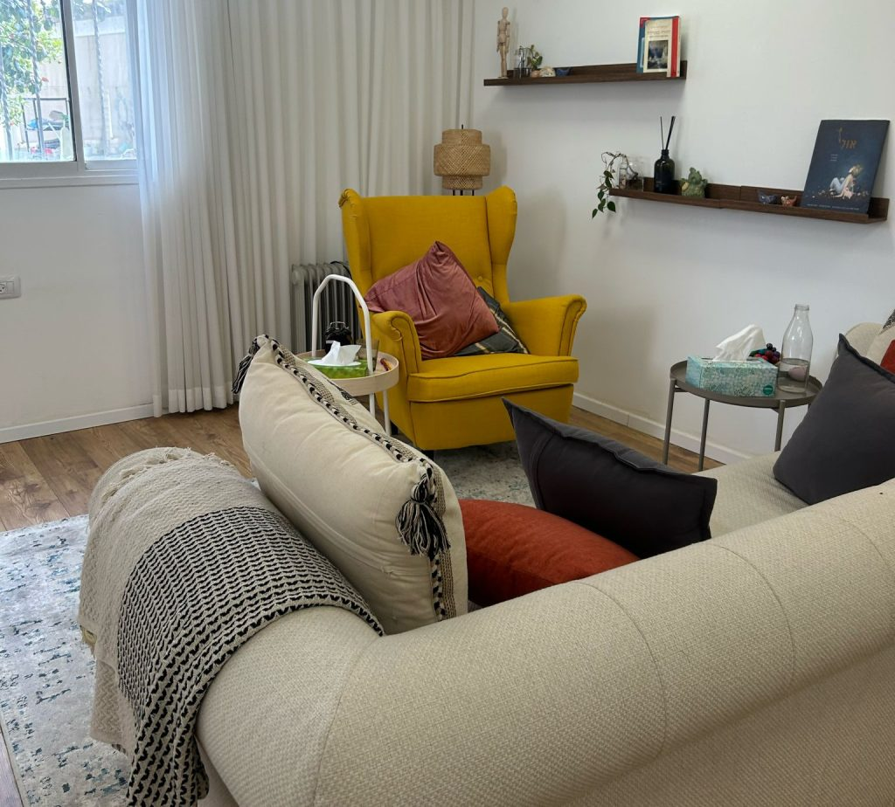

סימנים אצל ילדים ובני נוער
- הסתגרות או נסיגה חברתית
- התפרצויות זעם
- בכי ממושך
- תחושת בדידות
- דאגה חריגה
אצל ילדים, זיהוי הצורך נעשה פעמים רבות בשיתוף ההורים – והקשר איתם הוא חלק מרכזי בהבנה ובתמיכה.
טיפול פסיכולוגי לילדים, מתבגרים והורים
ליווי מקצועי, חם ומותאם אישית לילדים, לבני נוער ולהורים – בקליניקה בתל אביב, בנגב המערבי או מרחוק.

קצת עליי
אני פסיכולוגית חינוכית מומחית, עם ניסיון רב בעבודה עם ילדים, בני נוער והורים – הן במסגרת השירות הפסיכולוגי-חינוכי (באר שבע, מרחבים ולהבים) והן בקליניקה פרטית.
במהלך השנים ליוויתי ילדים ובני נוער בהתמודדות עם מגוון קשיים, ובהם חרדה, דיכאון, קשיים בוויסות רגשי והתנהגותי, קשיים חברתיים, משברי זהות בגיל ההתבגרות והתמודדות עם טראומה.
לצד העבודה עם ילדים ובני נוער, אני מלווה הורים בתהליכי הדרכה וטיפול בהורות. אני מאמינה שהקשר בין הורה לילד הוא מרכיב משמעותי בהתפתחות הרגשית והנפשית, ולכן חשוב לטפח אותו כחלק מהתהליך הטיפולי.
מוזמנים ליצור קשר – ונצא יחד למסע של התבוננות, חיבור וצמיחה.
תחומי טיפול
חרדות, פחדים, קשיי ויסות רגשי והתנהגותי, קשיים חברתיים והסתגלות למצבי חיים משתנים – באמצעות שיחה, משחק ויצירה.
מרחב אישי ומכבד לשאלות של זהות, דימוי עצמי, מצב רוח, חרדה ולחצים חברתיים ולימודיים בגיל ההתבגרות.
הבנה עמוקה של הדפוסים ההוריים, התמודדות עם תסכול וחוסר אונים, וחיזוק הקשר עם הילדים – כדי להורות מתוך בחירה.
ניסיון מעמיק בעבודה עם ילדים, נוער ומבוגרים באזור המתמודד עם אתגרי ביטחון, כולל טיפול ממוקד טראומה (EMDR).
גישה טיפולית
אני משלבת טיפול פסיכולוגי דינמי עם גישות מבוססות מחקר. שילוב הגישות מאפשר להתאים את הטיפול לכל מטופל ומטופלת, מתוך הקשבה והתבוננות.
האדם הוא חלק ממעגלים משמעותיים בחייו – ובמיוחד ילדים ובני נוער. לכן, בהתאם לצורך, אני משלבת את ההורים בתהליך. המחויבות שלי היא ללוות בתהליך מעמיק ומקצועי, תוך התאמה מתמדת לצרכים המשתנים ולהתפתחות האישית.
כפסיכולוגית חינוכית בדרום הארץ צברתי ניסיון מעמיק בטיפול במצבי חירום וטראומה. העבודה באזור המאופיין באתגרי ביטחון העמיקה את הבנתי בחשיבות הגמישות הטיפולית והיכולת להתאים את המענה למציאות המשתנה.
מתי מומלץ לפנות?
טיפול פסיכולוגי מתאים לכל מי שמתמודד עם מצוקה רגשית, תסכול, קושי בהסתגלות – או רוצה לערוך שינוי משמעותי בחייו.
אצל ילדים, זיהוי הצורך נעשה פעמים רבות בשיתוף ההורים – והקשר איתם הוא חלק מרכזי בהבנה ובתמיכה.
מעבר להפחתת הסימפטומים, הטיפול מציע מרחב להתחבר מחדש לאופן שבו תרצו ללוות את ילדיכם.
פנייה לטיפול היא צעד משמעותי להתבוננות ושינוי.
איפה נפגשים


שאלות נפוצות
שולחים הודעה בוואטסאפ, מתקשרים או ממלאים את הטופס בתחתית העמוד. נקבע שיחת היכרות קצרה, שבה נבין יחד מה הצורך ואם הטיפול מתאים.
כן, בהתאם לצורך. הקשר עם ההורים הוא חלק מרכזי בטיפול בילדים ובני נוער, והוא נבנה בהתאם לגיל ולמצב.
בחלק מהמקרים ניתן לתאם טיפול מרחוק. נבחן יחד בשיחת ההיכרות אם זו האפשרות המתאימה.
בהחלט. הדרכת הורים היא תהליך בפני עצמו, ולעיתים היא הדרך הנכונה להתחיל.
הטיפול מתקיים בכפוף לחובת הסודיות המקצועית ולכללי האתיקה של הפסיכולוגים בישראל.
יצירת קשר
מחפשים ליווי מקצועי, או רוצים לשמוע עוד? אני כאן בשבילכם.